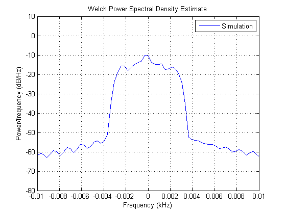
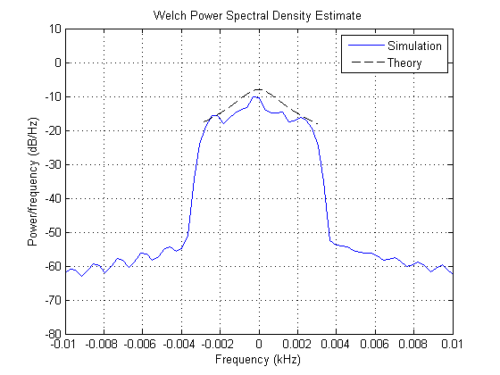
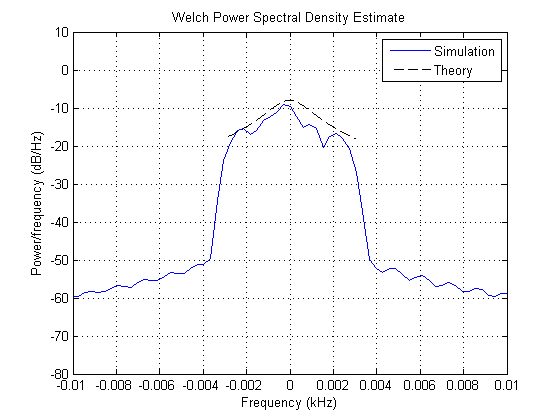
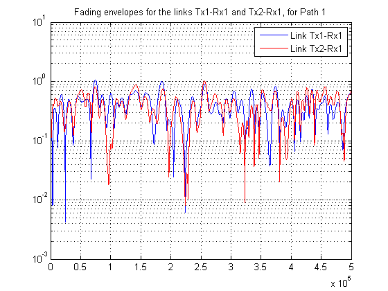
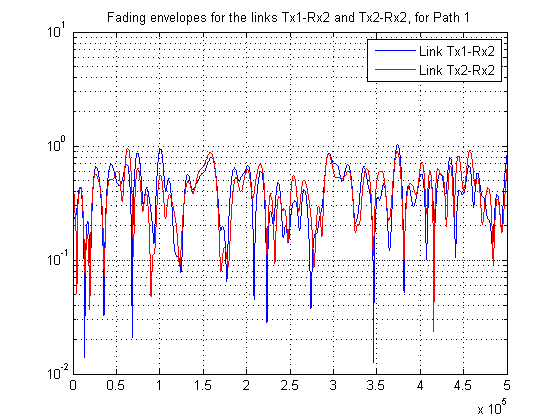
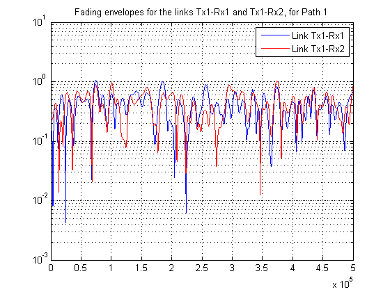
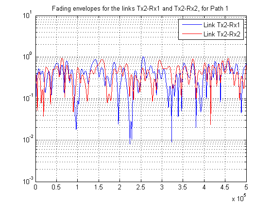

IEEE 802.11n Channel Models
This demo shows how to simulate multiple-input multiple-output (MIMO) multipath fading channels based on the IEEE® 802.11n channel models for indoor wireless local area networks (WLAN). Two transmit antennas and two receive antennas are used. The demo uses the MIMO multipath fading channel and the bell Doppler spectrum objects.
Contents
IEEE 802.11n Channel Models: Overview
The IEEE 802.11n channel models [ 1 ] are designed for indoor wireless local area networks for bandwidths of up to 100 MHz, at frequencies of 2 and 5 GHz. The channel models comprise a set of 6 profiles, labeled A to F, which cover the scenarios of flat fading, residential, residential/small office, typical office, large office, and large space (indoors and outdoors). Each channel model has a path loss model including shadowing, and a MIMO multipath fading model, which describes the multipath delay profile, the spatial properties, the K-factor distribution, and the Doppler spectrum.
Each channel model has a certain number of taps (one for model A, and 9 to 18 for models B-F). Each tap is characterized by a relative delay (with respect to the first path delay). Each model further comprises a number of clusters, which correspond to overlapping subsets of the tap delays. For example, model B has two clusters: cluster 1 corresponds to tap delays 0 to 40 ns (in steps of 10 ns), while cluster 2 corresponds to tap delays 20 to 80 ns (also in steps of 10 ns). Hence, clusters 1 and 2 comprise 5 and 7 tap delays, respectively, and they overlap in 3 tap delays (20, 30 and 40 ns). Each cluster is assigned a set of spatial properties: a mean angle of arrival (AoA), a mean angle of departure (AoD), an angular spread (AS) at the receiver, and an angular spread at the transmitter. These parameters assume the same values for all tap delays pertaining to a given cluster. These parameters determine the transmit and correlation matrices associated with each tap delay.
The IEEE 802.11n channel models make the following assumptions: 1) The power azimuth spectrum (PAS) and the power delay spectrum (PDS) are separable: each tap is modeled independently. 2) The PAS and the Doppler spectrum for each tap are separable: the spatial correlation (correlation matrices) and temporal correlation (Doppler spectrum) for each tap are modeled independently. 3) Each tap is modeled using the Kronecker model for Rician channels, hence it is assumed that the transmit and receive correlation matrices are separable for each tap.
Initialization of Simulation-Specific Parameters
The simulation sampling rate is specified, and kept the same for the remainder of the demo. The input to the channel simulator is oversampled by a factor of four.
S = RandStream('swb2712', 'Seed', 12345); % Set a local random number stream M = 2; % Modulation order hModem = modem.pskmod(M); % 2-PSK modulator object Rsym = 10e3; % Input symbol rate Rbit = Rsym * log2(M); % Input bit rate Nos = 4; % Oversampling factor ts = (1/Rbit) / Nos; % Input sample period
Channel Model B
The code below constructs a MIMO channel object according to channel model B of [ 1 ], in non-line-of-sight (NLOS) mode.
This channel model has 9 Rayleigh-fading paths, and each path has a bell Doppler spectrum, with a parameter as specified in the default doppler.bell object.
We use two transmit antennas and two receive antennas. For each path, the transmit and receive correlation matrices are calculated according to the procedure given in [ 1 ], [ 2 ].
Nt = 2; % Number of transmit antennas Nr = 2; % Number of receive antennas fd = 3; % Maximum Doppler shift for all paths (identical) dop = doppler.bell; % Bell doppler spectrum, with default parameters tau = [0 10 20 30 40 50 60 70 80] * 1e-9; % Path delays, in seconds Np = length(tau); % Number of paths % Average path gains of cluster 1, in dB pdb1 = [0 -5.4 -10.8 -16.2 -21.7 -inf -inf -inf -inf]; % Average path gains of cluster 2, in dB pdb2 = [-inf -inf -3.2 -6.3 -9.4 -12.5 -15.6 -18.7 -21.8]; % Total average path gains for both clusters, in dB pdb = 10*log10(10.^(pdb1/10)+10.^(pdb2/10)); % Element spacing at the transmit and receive antennas (normalized by the % wavelength) TxSpacing = 0.5; RxSpacing = 0.5; % Spatial parameters on transmitter side: % Angular spreads - Cluster 1 AS_Tx_C1 = [14.4 14.4 14.4 14.4 14.4 -inf -inf -inf -inf]; % Angular spreads - Cluster 2 AS_Tx_C2 = [-inf -inf 25.4 25.4 25.4 25.4 25.4 25.4 25.4]; % Mean angles of departure - Cluster 1 AoD_C1 = [225.1 225.1 225.1 225.1 225.1 -inf -inf -inf -inf]; % Mean angles of departure - Cluster 2 AoD_C2 = [-inf -inf 106.5 106.5 106.5 106.5 106.5 106.5 106.5]; % Spatial parameters on receiver side: % Angular spreads - Cluster 1 AS_Rx_C1 = [14.4 14.4 14.4 14.4 14.4 -inf -inf -inf -inf]; % Angular spreads - Cluster 2 AS_Rx_C2 = [-inf -inf 25.2 25.2 25.2 25.2 25.2 25.2 25.2]; % Mean angles of arrival - Cluster 1 AoA_C1 = [4.3 4.3 4.3 4.3 4.3 -inf -inf -inf -inf]; % Mean angles of arrival - Cluster 2 AoA_C2 = [-inf -inf 118.4 118.4 118.4 118.4 118.4 118.4 118.4]; % Calculation of transmit and receive correlation arrays [TxCorrelationMatrix, RxCorrelationMatrix] = ... calculateCorrMatrix(Nt, Nr, pdb1, pdb2, TxSpacing, RxSpacing, ... AS_Tx_C1, AS_Tx_C2, AoD_C1, AoD_C2, ... AS_Rx_C1, AS_Rx_C2, AoA_C1, AoA_C2); h = mimochan(Nt, Nr, ts, fd, tau, pdb); % MIMO channel object h.KFactor = 0; % Rician K-factor on first path h.DopplerSpectrum = dop; % Doppler spectrum of MIMO object h.TxCorrelationMatrix = TxCorrelationMatrix; % Transmit correlation array h.RxCorrelationMatrix = RxCorrelationMatrix; % Transmit correlation array
The code below simulates the effect of the MIMO channel on a random input sequence.
% After each frame is processed, the channel is not reset: this is % necessary to preserve continuity across frames. h.ResetBeforeFiltering = 0; % This setting is needed to store the path gains. h.StorePathGains = 1; Nsamp = 1e6/2; % Total number of channel samples Nsamp_f = 1000; % Number of samples per frame Nframes = Nsamp/Nsamp_f; % Number of frames out = zeros(Nsamp, Nr); link11 = zeros(Nsamp, Np); link12 = zeros(Nsamp, Np); link21 = zeros(Nsamp, Np); link22 = zeros(Nsamp, Np); for iFrames = 1:Nframes inputSig = modulate(hModem, randi(S, [0 M-1], Nsamp_f, Nt)); idx = (1:Nsamp_f)+(iFrames-1)*Nsamp_f; out(idx,:) = filter(h, inputSig); for ip = 1:Np % For each transmit-receive link, store gains of all paths link11(idx,ip) = h.PathGains(:,ip,1,1); link12(idx,ip) = h.PathGains(:,ip,1,2); link21(idx,ip) = h.PathGains(:,ip,2,1); link22(idx,ip) = h.PathGains(:,ip,2,2); end end
The Doppler spectrum of the Tx1-Rx1 link of the first path is estimated from the complex path gains and plotted.
Hs = spectrum.welch('Hamming', Nsamp/5, 50); figure; psd(Hs, link11(:,1), 'Fs', 1/ts, 'SpectrumType', 'twosided', 'Centerdc', true) axis([-0.01 0.01 -80 10]); legend('Simulation');
The theoretical bell Doppler spectrum is overlaid to the estimated Doppler spectrum. We observe a good fit between both.
f = -fd: 0.01 :fd; a = 9; % Parameters of the bell Doppler spectrum Sd = sqrt(a)/(pi*fd) * 1./(1 + a*(f/fd).^2 ); Sd = Sd * 1/2; % Each receive antenna is assigned half the power hold on; plot(f(Sd>0)/1e3, 10*log10(Sd(Sd>0)), 'k--'); legend('Simulation', 'Theory');
The Doppler spectrum for Tx1-Rx2 link of the first path is also estimated and compared to the theoretical spectrum. We also observe a good fit between both.
figure; psd(Hs, link12(:,1), 'Fs', 1/ts, 'SpectrumType', 'twosided', 'Centerdc', true) axis([-0.01 0.01 -80 10]); legend('Simulation'); hold on; plot(f(Sd>0)/1e3, 10*log10(Sd(Sd>0)), 'k--'); legend('Simulation', 'Theory');
For Path 1, we plot the fading envelope waveforms for each transmit-receive link. We can observe a correlation between the fading envelopes
figure; semilogy(abs(link11(:,1)),'b'); hold on; grid on; semilogy(abs(link21(:,1)),'r'); legend('Link Tx1-Rx1', 'Link Tx2-Rx1'); title('Fading envelopes for the links Tx1-Rx1 and Tx2-Rx1, for Path 1'); figure; semilogy(abs(link12(:,1)),'b'); hold on; grid on; semilogy(abs(link22(:,1)),'r'); legend('Link Tx1-Rx2', 'Link Tx2-Rx2'); title('Fading envelopes for the links Tx1-Rx2 and Tx2-Rx2, for Path 1'); figure; semilogy(abs(link11(:,1)),'b'); hold on; grid on; semilogy(abs(link12(:,1)),'r'); legend('Link Tx1-Rx1', 'Link Tx1-Rx2'); title('Fading envelopes for the links Tx1-Rx1 and Tx1-Rx2, for Path 1'); figure; semilogy(abs(link21(:,1)),'b'); hold on; grid on; semilogy(abs(link22(:,1)),'r'); legend('Link Tx2-Rx1', 'Link Tx2-Rx2'); title('Fading envelopes for the links Tx2-Rx1 and Tx2-Rx2, for Path 1');   
We compute the transmit and receive correlation matrices for the first path. They show a good match with the theoretical values (compare with TxCorrelationMatrix(:,:,1) and RxCorrelationMatrix(:,:,1) calculated earlier).
TxCorrMatrixPath1a = corrcoef(link11(:,1),link21(:,1)).' % Rx antenna 1 TxCorrMatrixPath1b = corrcoef(link12(:,1),link22(:,1)).' % Rx antenna 2 RxCorrMatrixPath1a = corrcoef(link11(:,1),link12(:,1)).' % Tx antenna 1 RxCorrMatrixPath1b = corrcoef(link21(:,1),link22(:,1)).' % Tx antenna 2
TxCorrMatrixPath1a = 1.0000 -0.4840 - 0.7190i -0.4840 + 0.7190i 1.0000 TxCorrMatrixPath1b = 1.0000 -0.5103 - 0.7236i -0.5103 + 0.7236i 1.0000 RxCorrMatrixPath1a = 1.0000 0.7868 + 0.1394i 0.7868 - 0.1394i 1.0000 RxCorrMatrixPath1b = 1.0000 0.7472 + 0.1078i 0.7472 - 0.1078i 1.0000
Selected Bibliography
- IEEE P802.11 Wireless LANs, "TGn Channel Models", IEEE 802.11-03/940r4, 2004-05-10.
- L. Schumacher, K. I. Pedersen, and P. E. Mogensen, "From antenna spacings to theoretical capacities - Guidelines for simulating MIMO systems", Proc. PIMRC Conf., vol. 2, Sep. 2002, pp. 587-592.